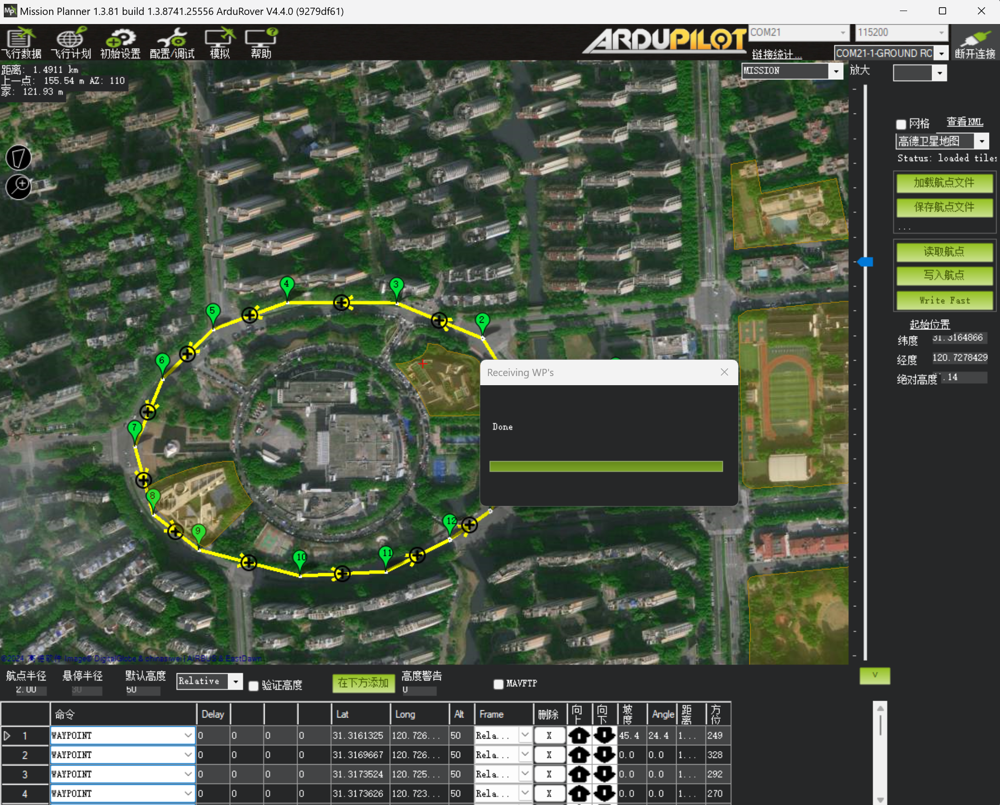
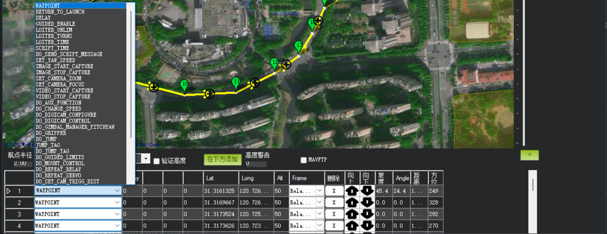
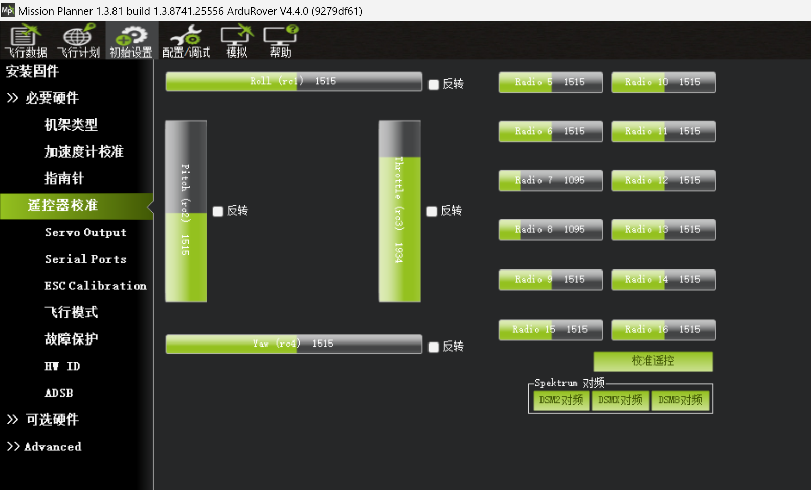
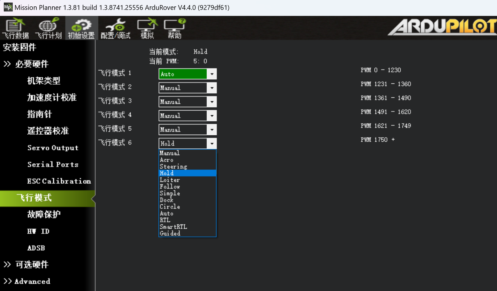

AutoRover-H3使用说明
AutoRover-H3是北力电子（blicube）提供的基于开源自动驾驶仪pixhawk的自动驾驶学习平台，支持PX4和Ardupilot固件。 默认出厂使用Ardupilot固件调校，以下教程也基于Ardupilot + Mission Planner来进行使用说明。
产品清单
| 名称 | 数量 |
|---|---|
| 车架 | 1辆 |
| 动力电池 | 1块 |
| 充电器 | 1个 |
| 遥控器 | 1个 |
| P900数传 | 1对 |
| P840数传 | 1对 |
| GRTK | 1对 |
| GRTK天线 | 3个 |
产品参数
| 项目 | 参数 |
|---|---|
| 车架 | 多连杆独立悬挂，油压避震 |
| 尺寸 | 55cm × 32cm |
| 自重 | 2.5KG |
| 驱动方式 | 四驱， 舵机转向 |
| 速度 | 0～10米/秒 |
| 电池 | 7.4V 5200mAh |
| 遥控方式 | 2.4G遥控 |
| 无线数传 | 433Mhz/915Mhz |
| 通信协议 | MAVLink |
使用说明
地面站使用

主界面左上方主要使用的四个主菜单按钮:
- 飞行数据实时显示姿态与数据；
- 飞行计划是任务规划菜单；
- 初始设置用于固件的安装与升级以及一些基本设置；
- 配置/调试包含了详尽的PID调节，参数调整等菜单。
主界面右上方是端口选择、波特率以及 连接/断开按钮（connect/disconnect）。地面站和AutoRover-H3之间进行连接的方式有两种，一种是使用USB连接地面站，另一种是使用无线数传连接地面站。
-
使用USB连接地面站
打开遥控器，使用USB线连接控制板到电脑，确保电脑已经识别到控制板的COM口后，打开地面站，在地面站主界面的右上方端口选择下拉框那里选择对应的 COM 口，然后波特率选择 115200，点击连接按钮。 -
使用无线数传连接地面站
打开遥控器，将带USB口的无线数传地面端插入电脑，确保电脑已经识别到数传的COM口后，打开地面站，在地面站主界面的右上方端口选择下拉框那里选择对应的 COM口，然后波特率选择 57600(3DR数传)/115200(P840数传)，点击连接按钮。
遥控操控
- 遥控器摇杆功能说明
{kind=link}
AutoRover-H3有多种驾驶模式，可以通过地面站软件自定义，默认设置三种：
-
Hold模式：车辆保持停止，转向和油门均被锁定
-
Manual模式：通过遥控器手动控制油门和方向
-
Auto模式：按照地面站生成的航线数据自动巡航，完成任务后进入
HOLD模式；该模式下拨回MANUAL模式可以获得手动控制权；
航线规划
-
打开地面站，点击
飞行计划菜单，在界面右侧的地图选项中下拉选择高德卫星地图（需要联网），在国内支持比较好。将小车放置在空旷的户外（有GPS信号），上电后通过无线数传连接到地面站，GPS定位后可以在界面上看到小车的实时位置。通过鼠标和滚轮可以自由的拖动、缩放地图。

-
点击地图上一点，即可生成一个航点，鼠标按住航点拖动即可调整航点位置。

-
依次点击地图上的点，即可生成一系列航点。

-
点击删除下的
X按钮即可删除对应航点。 -
点击
写入航点按钮即可把航线数据上传到小车，将覆盖小车原有的航线数据。
-
点击
读取航点按钮可以读取小车上的航线数据，呈现在地图上。
 -
在每个航点的地方可以设置不同的任务，自动驾驶仪就会在到达该航点是执行相应的动作。

{kind=link}
{kind=link}
{kind=link}
注意事项
- 驾驶前给遥控器和小车充电；
- 选择一片无人空旷的场地，先打开遥控器，将驾驶模式三段开关拨到“中”位置，即手动模式MANUAL，解锁开关处于锁定状态；
- 将小车放在水平地面，给小车上电，初始化过程中请勿移动小车。10秒完成初始化，但GPS定位需要更长时间，不影响手动操作；
- 等小车初始化完成，打开解锁开关，小车解锁，可以进行手动驾驶；
- 使用完毕后，先给小车断电，后关闭遥控器；
- 电池没电后请不要继续使用，否则会损坏电池，甚至造成小车失控！！！
基础参数设置
提示
该部分为使用Ardupilot自动驾驶仪固件的Rover基础功能相关的参数设置，AutoRover-H3在出厂时已经对基础功能进行了完整的设置，如果需要自行重新设置参数，可以参考本节的调参指南。
校准
加速度计校准
- 加速度校准位于地面站的
初始设置菜单下必要硬件中的加速度校准选项。
{kind=link}
-
点击
校准加速度计按钮，然后按照文字提示以此将自动驾驶仪水平、左边朝下、右边朝下、前方朝下、前方朝上、顶部朝下放置，注意每次都要保持静止，每次做完动作时点击完成时点击按钮，直到提示校准完成。 -
将自动驾驶仪水平放置，点击
校准水平按钮，完成后点击完成按钮。
指南针校准
-
指南针校准位于地面站的
初始设置菜单下必要硬件中的指南针选项。 -
勾选
Use Compass 1，点击Start，开始校准。

-
校准时尽可能均匀地绕自动驾驶仪的x、y、z轴旋转，直到绿色进度条满格，出现
Please reboot the autopilot提示，点击OK重启自动驾驶仪，完成校准。
遥控器校准
-
遥控器校准位于地面站的
初始设置菜单下必要硬件中的遥控器校准选项。
 -
在进行遥控器校准前，先确定自己的遥控器模式，遥控器分为左手油门和右手油门，模式通过RCMAP_THROTTL参数进行设定。
左手油门：RCMAP_THROTTLE = 2
右手油门：RCMAP_THROTTLE = 3 -
将遥杆、拨杆都尽可能向各个方向拨到最大行程，图中的行程示意图的绿条会随着变化，红色线表示其最大行程量。

-
最大行程捕获完毕后，点击
完成时点击按钮，完成校准，出现的弹窗都点击OK。


-
校准完成。
{kind=link}
{kind=link}
{kind=link}
Servo输出功能设置
Ardupilot Rover支持阿克曼转向车型、差速转向车型、麦克纳姆轮车型，不同车型的支持就通过所连接的舵机数量和舵机的输出功能来设置。AutoRover-H3默认使用阿克曼转向车型，所以需要设置舵机输出功能。
-
阿克曼转向车型
Servo1配置为GroundSteering，Servo3配置为Throttle。
也可在参数列表中配置：
SERVO1_FUNCTION = 26 (GroundSteering)
SERVO3_FUNCTION = 70 (Throttle) -
差速转向车型 Servo1配置为
Throttle Left，Servo3配置为Throttle Right。
也可在参数列表中配置：
SERVO1_FUNCTION = 73 (Throttle Left)
SERVO3_FUNCTION = 74 (Throttle Right) -
麦克纳姆轮车型 首先配置车型：FRAME_TYPE = 1 (四个轮子左右配置), 2 (四个轮子呈X形配置) 或者 3 (四个轮子呈+形配置)
Servo1配置为Motor1，Servo2配置为Motor2，Servo3配置为Motor3，Servo4配置为Motor4。
也可在参数列表中配置：
SERVO1_FUNCTION = 33 (Motor1)
SERVO3_FUNCTION = 34 (Motor2)
SERVO3_FUNCTION = 35 (Motor3)
SERVO3_FUNCTION = 36 (Motor4)
{kind=link}
飞行模式
-
配置飞行模式之前，设置用于切换飞行模式的遥控器通道
 MODE_CH = 5(AutoRover-H3设置5通道切换飞行模式)
MODE_CH = 5(AutoRover-H3设置5通道切换飞行模式) -
通过拨动遥控器飞行模式切换通道的拨杆，观察绿色高亮的部分，然后在下拉选项中选择需要的飞行模式。 
-
点击
保存模式按钮保存设置。

AutoRover-H3设置飞行模式1为Hold，飞行模式4为Manual，飞行模式6为Auto。
{kind=link}
GRTK相关参数设置
-
配置GRTK的NMEA协议
GPS_TYPE = 5
GPS_RATE_MS = 100
SERIAL3_BAUD = 115 -
GRTK航向配置
使用双天线测向需启用 GPS 航向:（航向为ANT1指向ANT2）
AHRS_EKF_TYPE = 3， 选择 EKF3
EK2_ENABLE = 0， 禁用 EKF2
EK3_ENABLE = 1， 启用 EKF3
EK3_SRC1_YAW = 2， 启用 GPS 航向 -
GRTK天线安装偏移
GPS_POS1_X = -0.16 因为AutoRover-H3的定位天线安装在车体后部（前向为x正），距离车体中心0.16m，所以设置GPS_POS1_X = -0.16。
数传参数设置
如果使用3DR的数传，则无需配置，如果使用Rlink P900或P840数传，则需要配置数传参数。如果数传连接到自动驾驶仪的TELEM1端口，则需要设置SERIAL1_BAUD = 115。如果数传连接到自动驾驶仪的TELEM2端口，则需要设置SERIAL2_BAUD = 115

解锁设置
由于AutoRover-H3默认不适用安全开关，所以将设置禁用安全开关，关闭检查：BRD_SAFETY_DEFLT = 0
{kind=link}
高级参数设置
提示
该部分为使用Ardupilot自动驾驶仪固件的Rover驾驶相关的参数设置，AutoRover-H3在出厂时已经对驾驶功能进行了完整的设置，如果需要自行重新设置参数，可以参考本节的调参指南。
转向微调
如果在手动模式MANUAL下，车辆在方向舵处于中立位置时无法直线行驶，可以选择调整方向舵的机械结构来纠正，或者使用RCx_OPTION = 5（Save Trim）来纠正。在在遥控器校准完成后，不建议使用遥控器的方向微调按钮，因为在非手动模式下，它会被视为持续的方向输入量。
在RCx_OPTION = 5的通道上激活Save Trim，将立即捕获当前方向舵通道伺服（通常为SERVO1）的输出，并将其存储为SERVOx_TRIM值。通过取消激活和重新激活遥控通道功能，可以重复此操作。输出仅在激活时刻保存。它可以在除了LOITER或HOLD模式之外的任何模式下使用。
Tips
这个功能在自动驾驶仪维持航向的ACRO模式下使用最佳。自主模式，如AUTO或RTL，可能会在转向航点、横向修正或在结束时盘旋时捕获输出，并存储错误的结果。它还可以在MANUAL模式下使用，通过在遥控器上使用微调按钮进行调整以实现直线行驶，然后激活Save Trim，最后再将遥控器微调调到中立位置。
调试速度和油门
下面将介绍如何调整Rover的速度和油门控制。一般来说，在调整转向控制器之前，最好先调整这个控制器。

巡航油门和巡航速度
CRUISE_THROTTLE和CRUISE_SPEED参数设置了期望速度到油门输出的基准值，用于 Desired-Speed-to-Throttle 控制器。这两个值的设置非常重要，并且应该是合理且一致的，也就是说 CRUISE_THROTTLE的值（以百分比表示）应该接近实现CRUISE_SPEED（以 m/s 表示）所需的油门输出。
设置这些参数的最简单方法是：
- 将Auxiliary Function Switch设置为"Learn Cruise Speed"
- 解锁飞行器并切换到Manual模式
- 在 50% 到 80% 的油门输出下驾驶飞行器
- 将辅助功能开关切换到高位，保持几秒钟，然后切回低位
- 检查地面站是否显示类似 "Cruise Learned: Thr:XX Speed:YY" 的消息，确认CRUISE_SPEED和CRUISE_THROTTLE已经更新
期望速度到油门的PID调节
期望速度到油门控制器使用PID控制器来尝试实现由飞行员或自动驾驶设置的期望速度。除了Hold模式和Manual模式之外，所有模式都使用此控制器。
该控制器的P、I和D增益分别保存在ATC_SPEED_P、ATC_SPEED_I和ATC_SPEED_D参数中。ATC_SPEED_FF应该保持为零。
推荐调节此控制器的步骤如下：
- 使用遥测无线电将地面站与车辆连接起来
- 将GCS_PID_MASK设置为 2（油门），以将 PID 信息发送到地面站
-
在地面站上绘制 "piddesired" 和 "pidachieved" 的图表。如果使用 Mission Planner，打开 Flight Data 屏幕，勾选 "Tuning" 复选框（底部中间），双击图表并选择 "pidachieved"、"piddesired"。

-
在Acro模式下以不同的速度驾驶车辆，并比较pidachieved如何跟随piddesired
- 调整ATC_SPEED_P、ATC_SPEED_I的值，使piddesired跟随pidachieved
- ATC_SPEED_P是最重要的，应该首先进行调节。如果车辆的速度不稳定且抖动，应该减小此参数。如果车辆加速缓慢，应该增大此参数。
- ATC_SPEED_I用于修正长期误差。如果车辆无法达到期望速度，应该增大此参数。如果车辆的速度在过快和过慢之间缓慢振荡，应该减小此参数。通常情况下，I应该比P小。
- ATC_SPEED_D用于抵抗速度的短期变化，以稳定输出。此参数可以保持为零。
- ATC_SPEED_FF应该保持为零，因为使用CRUISE_THROTTLE和CRUISE_SPEED来计算基准油门输出，不需要前馈控制。
最大加速度
ATC_ACCEL_MAX和ATC_DECEL_MAX参数应该设置为与车辆的物理限制相匹配。这有助于速度控制器避免尝试不可能的加速度，并减少超调。
-
使用地面站实时查看前后（即 x 轴）加速度。如果使用 Mission Planner，打开 Flight Data 屏幕，勾选 "Tuning" 复选框（底部中间），双击图表并选择 "ax"。注意，这些值以 cm/s 为单位，应该除以 100 得到 m/s。

-
在手动模式下驾驶车辆，全油门加速从停止到最高速度
- 使用显示的加速度作为指导，设置ATC_ACCEL_MAX和ATC_DECEL_MAX参数。注意，显示的值可能以 cm/s 为单位，而参数以 m/s 为单位。如果车辆的加速度和减速度相似，可以将ATC_DECEL_MAX设置为零
- 在 Acro 模式下驾驶车辆，测试车辆的加速度是否平稳，减速是否不太滞后
油门斜率
参数MOT_SLEWRATE可以用来限制油门输出的变化速度。
- 值为100时，油门输出可以在一秒内完全变化。
- 值为零时，禁用限制。
调试转向速率
本节描述了如何调整Rover的转向速率控制器（也称为转向速率控制器）。这是为了实现良好的转向控制而需要调整的最重要的控制器。
{kind=link}
转向速率PID调整
转向速率控制器使用PID控制器来尝试实现所需的转向速率（由驾驶员或自动驾驶设定）。除了Hold和Manual模式外，所有模式都使用此控制器。
此控制器的FF、P、I和D增益分别保存在ATC_STR_RAT_FF、ATC_STR_RAT_P、ATC_STR_RAT_I和ATC_STR_RAT_D参数中。
调整此控制器的推荐步骤如下：
- 使用遥测无线电将地面站连接到车辆
-
将ACRO_TURN_RATE参数设置为大致等于车辆的最大转向速率（以deg/sec为单位）。为了获得更精确的测量结果：
-
在Mission Planner的飞行数据屏幕上，勾选“Tuning”复选框（底部中间），双击图表并选择“gz”（陀螺仪Z轴）
- 在手动模式下以中等速度驾驶车辆，进行非常急转弯
-
将ACRO_TURN_RATE设置为稍低于观察到的最高值。请注意，显示的值可能以厘度/秒为单位，因此应将其除以100以匹配参数的deg/sec单位
-
将GCS_PID_MASK设置为1（转向）
-
在Mission Planner的飞行数据屏幕上，勾选“Tuning”复选框（底部中间），双击图表并选择“pidachieved”、“piddesired”
-
在Acro模式下以中等速度驾驶车辆，进行各种宽转弯和紧转弯，并比较pidachieved与piddesired的匹配程度
- 首先调整ATC_STR_RAT_FF。该增益将期望的转向速率直接转换为转向伺服或电机输出。如果车辆的转向速率响应较慢，则应增加此参数。如果车辆不断超过期望的转向速率，则应减小此参数。
- ATC_STR_RAT_P用于修正短期误差。如果FF值设置得很好，通常可以将此增益设置为较低的值（例如FF的20%）。如果设置过高，转向速率可能会振荡。此ATC_STR_RAT_P应始终低于ATC_STR_RAT_FF。
- ATC_STR_RAT_I用于修正长期误差。通常可以将此增益设置为与P相同的值。如果车辆永远无法达到期望的转向速率，则应增加此参数。如果车辆的转向速率缓慢振荡，则应减小此参数。此ATC_STR_RAT_I应始终低于ATC_STR_RAT_FF。
- ATC_STR_RAT_D旨在通过抵抗转向速率的短期变化来稳定输出。通常可以将此增益保持为零。
最后将ATC_STR_RAT_MAX设置为ACRO_TURN_RATE的值，并可选择降低ACRO_TURN_RATE。这两个参数之间的差异是：
- ACRO_TURN_RATE控制将驾驶员的输入转换为Acro模式下的期望转向速率。可以减小此参数，使Acro模式下的转弯更加温和。
- ATC_STR_RAT_MAX是车辆在任何模式下尝试的最大转向速率。通常应将其保持接近车辆的性能极限，以使车辆保持敏捷。
调试原地转向
本节介绍如何调整Rover上的“原地转向”功能，具体请参考：差速转向。
原地转向是指车辆减速或停止，朝着目的地转向，然后继续前进。这些转弯仅在:Auto、Guided、RTL和SmartRTL下触发，并且仅在车辆首次朝着下一个航点前进时触发。
参数
- :WP_PIVOT_ANGLE保存触发原地转向的最小角度误差。例如，当设置为默认值“60”时，如果车辆的航向与下一个航点的航向相差至少60度，则触发原地转向。除非您希望禁用原地转向（可以通过将此参数设置为0来实现），否则通常不应将此参数设置为低于30。一旦车辆的航向与目的地的航向相差不超过10度，车辆将开始朝着下一个航点前进。
- WP_PIVOT_RATE保存原地转向期间车辆的最大转向速率（以度/秒为单位）。
- ATC_STR_ANG_P将车辆的航向误差转换为期望的转向速率。较高的值会导致车辆更积极地朝着目的地转向。
- ATC_STR_RAT_MAX限制车辆在所有模式下的最大转向速率（以度/秒为单位），包括原地转向期间。
- ATC_STR_ACC_MAX限制车辆在所有模式下的最大旋转加速度（以度/秒²为单位）。较高的数值会使车辆更快地达到其最大转向速率。
QuickTune
QuickTuneLua脚本简化了寻找车辆转向和速度控制器的良好增益的过程。
在车辆处于Circle（环绕模式）时运行该脚本。 它记录转向和油门输出以及相应的响应（例如车辆的转向速率和速度）至少10秒钟，以计算前馈增益。 然后，P和I增益将设置为前馈增益的比例。 完成后，增益将自动保存。
默认情况下，增益将按照以下顺序进行调整：
- ATC_STR_RAT_FF，然后将ATC_STR_RAT_P和I设置为前馈增益的比例
- CRUISE_SPEED和CRUISE_THROTTLE，然后将ATC_SPEED_P和I设置为前馈增益的比例
该脚本还将调整滤波器设置：
- ATC_STR_RAT_FLTD和FLTT将设置为INS_GYRO_FILTER值的一半
安装脚本
- 将SCR_ENABLE设置为1以启用脚本，然后重新启动自动驾驶仪
- 将rover-quicktune.lua下载到您的PC上
-
将脚本复制到自动驾驶仪的SD卡的APM/scripts目录中。如果使用MP，使用Config，MAVFtp屏幕可能是最简单的方法
-
重新启动自动驾驶仪并将RTUN_ENABLE设置为1
-
如果要使用RC开关启动/停止调谐，请将RCx_OPTION设置为300，其中"x"是RC输入通道号。或者将Mission Planner的Aux Function选项卡的某一行设置为"Scripting1"

{kind=link}
运行QuickTune
- 前往一个有良好GPS接收的开放区域
- 连接地面站（例如Mission Planner或QGC），确保可以看到消息选项卡。这是调谐输出的显示位置
- 将遥控器开关移动到低位，或按下MP的Aux Function的“低”按钮
- 可选地将CIRC_SPEED设置为车辆最大速度的一半左右
- 解锁车辆，驾驶到开放区域并切换到Circle模式
- 通过将遥控器开关移动到中位，或按下MP的Aux Function的“中”按钮开始调谐
- 使用GCS的消息选项卡监视调谐的进度
- 如果遥控器的转向和油门杆从中心位置移动，调谐将暂停，直到它们被移回中心位置几秒钟后
- 如果车辆开始剧烈振荡，请将遥控器开关移动到低位，或按下MP的Aux Function的“低”按钮取消调谐
- 一旦调谐完成，新的增益将自动保存
- 驾驶车辆返回并上锁
其他参数
可用的参数设置的完整列表在这里
调试导航(Ardupilot Rover固件4.3及以上版本)
本节描述了如何调整导航控制，包括"S-Curves"和"位置控制器"。在尝试调整此控制器之前，应先调整较低级别的速度和转向速率控制器。

S-Curves和位置控制器在所有自主模式中使用，包括Auto、Guided、RTL和SmartRTL。
S-Curves
S-Curves用于规划一条平滑的路径，使车辆接近每个航点，同时不超过速度或加速度限制。生成的路径包括连续的位置和2D速度目标。
影响路径的因素包括：
- 车辆将切割转弯，但始终尽量在每个航点的WP_RADIUS或TURN_RADIUS（以较大者为准）内通过
- 车辆在高速时更容易切割转弯
- 如果最大加速度减小（例如ATC_ACCEL_MAX、ATC_DECEL_MAX和ATC_TURN_MAX_G * 9.81中的最小值），车辆将更容易切割转弯
- 如果必要，车辆将减速在转弯处通过航点，以确保不超过最大加速度（例如ATC_ACCEL_MAX、ATC_DECEL_MAX和ATC_TURN_MAX_G * 9.81中的最小值）
- 将航点放得越近，车辆行驶速度越慢
位置控制器
位置控制器负责计算期望的速度和转向速率，使车辆沿着由S-Curves创建的航点之间的路径行驶（参见上文）。然后将期望的速度和转向速率传递给较低级别的控制器。
调整位置控制器的方法：
- 使用遥测无线电将地面站连接到车辆
-
创建一个矩形或来回任务，包含长直线段，并上传到车辆
-
调整以下参数以改善车辆沿着直线行驶的跟踪性能
- 增加PSC_VEL_P，直到车辆在直线上的转弯处良好跟踪，而不会产生振荡
- 增加足够的PSC_VEL_D，使转弯更加灵敏，但不会在直线上引入振荡。通常不应超过PSC_VEL_P的10%
-
这些值通常不需要更改
-
PSC_POS_P应保持为0.2（默认值）。这将将位置误差转换为期望速度。较高的值将导致车辆试图更快地返回到线上，但如果提高得太高可能会导致振荡
- PSC_VEL_FF应始终为0
- PSC_VEL_IMAX应始终为1
- PSC_VEL_FLTD、PSC_VEL_FLTE应保持默认值5，尽管小型车辆可能受益于更高的值
{kind=link}
实时监控速度控制器的PID值也可能有所帮助
-
确保任务具有长直线段，要么是南北对齐，要么是东西对齐
-
启用位置控制器的速度控制器的实时PID报告
-
如果任务是东西对齐的，请设置GCS_PID_MASK = 64（速度北）
-
如果任务是南北对齐的，请设置GCS_PID_MASK = 128（速度东）
-
在地面站上显示实时PID值。如果使用MP，请转到数据界面，勾选“调整”复选框。双击显示区域，选择“piddesired”、“pidachieved”、“pidP”、“pidI”和“pidD”

{kind=link}
其他参数
- WP_SPEED定义了车辆在Auto模式和Guided模式中行驶的目标速度（以m/s为单位）。如果RTL_SPEED设置为零，则还将在RTL模式和SmartRTL模式中使用
- WP_RADIUS指定了车辆在航点之前可以开始转向下一个航点的距离
位置控制器的工作原理
- 将车辆的当前位置与期望位置进行比较，并计算期望的2D速度以缩小差距
- 将车辆的当前速度与上述速度（也称为位置修正速度）+ S-Curve提供的速度进行比较，并计算期望的2D加速度以减小误差
- 位置修正速度 + S-Curve速度的前后部分成为目标前进速度
- 2D加速度的横向分量成为目标转向速率
调试导航(Ardupilot Rover固件4.2及以下版本)
本节描述了如何调整导航控制，包括"L1控制器"。在尝试调整此控制器之前，应先调整较低级别的速度和转向速率控制器。
L1控制器
L1控制器是最高级别的转向控制器。它接受位置目标（即纬度、经度点）和车辆当前速度，并输出所需的横向加速度，然后将其馈送到较低级别的控制器（包括转向速率控制器）。这样，车辆就会沿着目标线路行驶。该控制器在所有自主模式中使用，包括：Auto、Guided、RTL和SmartRTL。
调整L1控制器的推荐步骤：
- 使用遥测电台将地面站连接到车辆
- 创建一个矩形或来回任务（可以使用任务规划器的飞行计划界面），并上传到车辆
- 解锁车辆（在Manual模式或Hold模式下），然后切换到Auto模式
- 如果车辆在直线上摇摆，则将NAVL1_PERIOD（也称为"Lat Acc Cntrl Period"）逐步提高0.5
- 如果车辆转弯不够急，则将NAVL1_PERIOD（也称为"Lat Acc Cntrl Period"）逐步降低0.5
-
逐步提高NAVL1_DAMPING（也称为"Lat Acc Cntrl Damp"）0.05，以改善在狭窄路线上的导航
其他参数
-
ATC_TURN_MAX_G定义了控制器在转弯时尝试的最大横向加速度（以G为单位，即9.81m/s/s）。大多数车辆无法达到0.3G以上。为了更精确地测量车辆的最大可能横向加速度：
-
在任务规划器的飞行数据界面上，勾选"Tuning"复选框（底部中间），双击图表并选择"ay"（纵向加速度）
- 在手动模式下以高速驾驶车辆，进行非常急转弯
-
将ATC_TURN_MAX_G设置为略低于观察到的最高值。注意，显示的值可能是cm/s/s，因此应将该值除以981以匹配参数
-
WP_SPEED定义了车辆在Auto模式和Guided模式中行驶的目标速度（以m/s为单位）。如果RTL_SPEED设置为零，则还将在RTL模式和SmartRTL模式中使用
- WP_RADIUS指定了车辆在航点之前可以开始转向下一个航点的距离。此参数不应设置得太低，否则车辆在接近航点时可能尝试无用的转向。
WP_OVERSHOOT用于在车辆偏离起点和目标点之间的线路时减速。如果设置得太低，车辆可能会频繁减速，因为其位置偏离了航点之间的线路。如果设置得太高，车辆可能不会在转弯时减速。- PIVOT_TURN_ANGLE仅用于差速转向车辆。如果车辆的航向误差大于此值（以度为单位），车辆将暂时停止并朝目标点旋转后继续前进。有关更多详细信息，请参阅调整转向转弯。